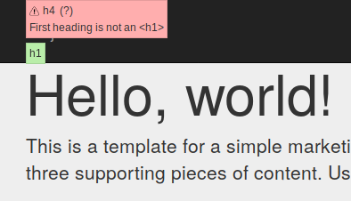
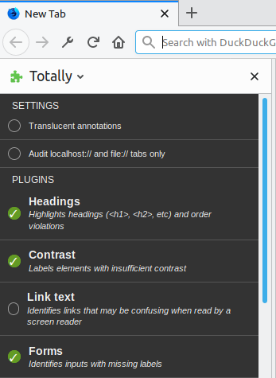

Totally Automated Accessibility Scanner is a completely free
tool which automatically detects and reports common accessibly
violations on your website. Unfortunately you still have to
manually read and fix the errors but hopefully you'll learn a
bit about accessibility as you do.
Totally is built from the accessibility
visualization toolkit
tota11y by Khan Academy. Totally runs in
your browser's sidebar and like tota11y helps you to
visualise how your site performs with assistive technologies.
Totally is designed to help you identify a number of accessibility
concerns relating to the comprehensive guidelines maintained
by the WC3 in the WCAG
without prior accessibility knowledge to make sense of the
results.

How it works
When Totally is running you will see a transparent icon with
glasses in the bottom left corner of your webpage.
In your sidebar you can enable and disable Plugins.
If you can't see this sidebar you need to open it first under
View -> Sidebar -> Totally Automated A11y Scanner.
Alternatively use CTRL+B to open the Bookmarks sidebar then
click the dropdown to switch to Totally Automated A11y Scanner.
When you enable a Plugin it runs on the current page and creates
an InfoPanel below the menu. Each Plugin tests for different
accessibility criteria and may create annotations on the page
or list errors in their InfoPanel. All plugins also have an
About tab in their InfoPanel which provides supporting
information.

Errors
Many Totally Plugins also suggest fixes for the accessibility
violations they find on your page, as well as providing
supporting information and links to help you understand what's
gone wrong.
This image has no alt attribute and and a screen reader will likely read off its filename.
This image has an empty alt attribute so a screen reader will interpret it as decorative.
This image has a descriptive alt attribute so a screen reader will be able to vocalise it.
This text will be cut off if it is enlarged.
This input uses a label element and an ARIA label but they do not match
This page also has no language specified.
What can't it do
Even WebExtensions do not have privileges for everything and
not every possible test has been written. Totally doesn't
test for many important accessibility concerns relating to
keyboard input (such as no keyboard trap),
timing constraints, content that may cause seizures,
mouse pointer input, and many other WCAG Success Criteria.
Many of these are not possible to automate from a WebExtension
and others require real semantic understanding of the webpage
rather than just parsing the DOM.
It is hoped that Totally Automated Accessibility Scanner is
still helpful but it will never be a complete substitute for
manual accessibly testing.
TASS tests text contrast ratios meet this guideline, and suggests fixes. It cannot properly identify text contrast against background images or in images of text.
TASS tests text is not clipped when enlarging font size. TASS also has a tool to let you visually see the effect of enlarged font size on your webpage.
TASS tests text is not clipped when increasing text spacing properties. TASS also has a tool to let you visually see the effect of increased text spacing properties on your webpage.
Level AAA criteria
These are still generally good to meet, but the W3C do not recommend it as a general policy
TASS can visualise ARIA labels on a webpage for you. Point it at Facebook to get a good demonstration.
Screen Reader Wand
TASS has a screen reader wand which can give you an idea of the sorts of things screen readers see on elements. It is not production grade and may miss things real screen readers would find.
Disabled click event input elements
TASS warns you if it sees a read only input element which also has JavaScript click events registered, as this will likely cause problems for screen reader users that won't be able to interact with it.
← You should see glasses here when totally is running